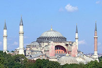

| Ayasofya İstanbul'da tarihî bir müze. Bizans Ýmparatoru I. Jüstinyen tarafýndan MS 532 - 537 yýllarý arasýnda İstanbul'un tarihi yarımadasındaki eski şehir merkezine inşa ettirilmiş bazilika planlı bir patrik katedrali olup, 1453 yılında İstanbul'un Türkler tarafından alınmasından sonra, Fatih Sultan Mehmet tarafından camiye dönüştürülmüştür. 1935 yılından beri ise müze olarak hizmet vermektedir. Ayasofya, mimari bakımdan, bazilika planı ile merkezî planı birleştiren, kubbeli bazilika tipinde bir yapı olup kubbe geçişi ve taşıyıcı sistem özellikleriyle mimarlık tarihinde önemli bir dönüm noktası olarak ele alınır. |